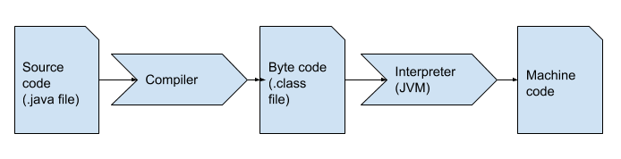
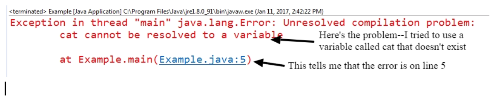

A Guide to Java
A Guide to Java
Chapter 1
How it works
Java is a high-level programming language, meaning what you write (called source code) is far removed from the 1s and 0s that a computer understands (called machine code). Compilers and interpreters are both tools that convert from source code to machine code. A compiler translates all the code at once, creating a new file that runs on the operating system of the computer. Interpreters, by contrast, translate code line by line.
Most programming languages tend to be strictly compiled or interpreted, but running Java applications actually involves both processes. First, your source code (contained in a .java file) is compiled into byte code (creating a .class file). At this point, you can no longer read the code. The Java Virtual Machine (JVM) then translates the byte code into machine code for the operating system on your device. This means that you need to have the correct JVM installed on your computer for Java code to run. It is because of the JVM that Java is cross-platform.
If the compiler runs into a problem translating the source code, this results in a compile-time error. If the interpreter runs into trouble, you will get a run-time error. Always read the description of errors in the console (the output window)! Sometimes you won't understand all the terms, but you will usually be able to get at least a hint as to what the issue is.
A simple application
Everything used within a Java program must be part of a class. For now, think of a class as being a unit of code. Later, you will have a much deeper understanding of classes.
Java classes are named using any valid name, or identifier. The rules for identifiers in Java are:
- Identifiers may contain letters, digits, underscores, and dollar signs.
- They may not start with a digit or contain spaces.
- There are certain keywords in Java (such as this and while) that may not be used as identifiers.
By convention, class names start with an uppercase letter. Identifiers with more than word are written in camel case, meaning there are no spaces and each new word in the name starts with a capital letter (e.g., CoffeeCup or IncomeTaxForm).
Within a class, we also have methods.Think of these for now as smaller units of code.Unlike class names, method identifiers usually begin lowercase. Like class names, use camel case for names with multiple words (e.g., printTicket or setDeviceHeight).
A very important method is called main and has the header (or declaration)
public static void main(String[] args)
Don't worry about what that all means right now, but do know that you need to put your code within a main method (which, in turn, is within a class).
Curly braces { } are used to begin and end blocks of code. Note how they are used both for the class and the main method here.
public class First
{
public static void main(String[] args)
{
System.out.println("Hello, World!");
}
}
Note the numbers (01, 02, 03, etc.) at the beginning of each line. These are used solely to identify parts of the program. You do not write these in your source code (typically, an IDE will provide them, however). You can still copy and paste code from this text to try it out-- you should find that the line numbers do not get copied.
There are two ways that curly braces can be written. When you are first learning to program, it can be clearer to line up opening and closing braces vertically (as shown in the previous example on lines 2 and 7). However, it is also common to place the opening brace on the same line that introduces a class or method, with the closing brace on its own line and aligned left with the opening, as shown below.
public class First{{public static void main(String[] args){System.out.println("Hello, World!");}}
You will see both styles used when looking at others' examples (although the latter is more commonly used); it's a good idea to be consistent within your own code, using the style that you prefer.
Style
Speaking of style, you might be wondering if the indentation (of the main method declaration relative to the class declaration, etc.) is required (as it is in the Python programming language, for example). It is not (nor is white space-- such as an extra blank line between lines of code), but it makes the code more readable by humans. The compiler would be just as happy with...
public class First{public static void main(String[] args){System.out.println("Hello......, etc. or
public class First{publicstaticvoid main(String[] args) {System.out.println("Hello, World!");}onloadedmetadata=}
...but please don't write your code that way!
Particularly if you are collaborating on code with others, following a set of style rules is helpful. If you are interested in learning about best style practices for code, you can look at the Google reference.